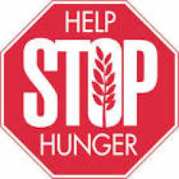
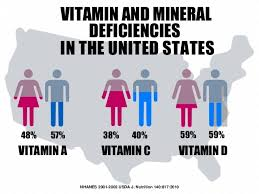
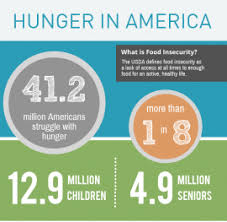
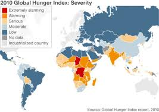

What We Are About
In a country that wastes billions of pounds of food each year, it's almost shocking that anyone in America goes hungry. Yet every day, there are millions of children and adults who do not get the meals they need to thrive. We work to get nourishing food – from farmers, manufacturers, and retailers – to people in need. At the same time, we also seek to help the people we serve build a path to a brighter, food-secure future.
Who Goes Hungry?
Hunger can affect people from all walks of life. Many Americans are one job loss or medical crisis away from food insecurity – but some people, including children and seniors, may be at greater risk of hunger than others. Get the facts. Millions of people struggle to get by because of underemployment, stagnant wages and rising costs of living. In fact, more than 46 million people still turn to the Feeding America network each year for extra support. There are also many different types of hunger that many are unaware of. There is Child hunger, Senior hunger, Rural hunger, African American hunger, and Latino hunger. Learn to help, because there is always something that you are able to do.
  How You Can Help

When you join the Feeding America Hunger Council as a monthly donor, you become someone we can count on to help families facing hunger. You also receive exclusive information and updates on critical hunger issues such as reducing food waste and improving summer meal programs for children. Together, we can end hunger, but it’s going to require an active partnership between individuals like you, charity, the private sector, and the government. That’s why Feeding America advocates for policies that will ensure aid to hungry families.
It doesn’t take a big commitment to make a big impact. Together, with millions of other food bank volunteers, your time makes a difference in the lives of your neighbors struggling with hunger. Help the Feeding America nationwide network get food in the hands of those who need it most. Help you can change lives.